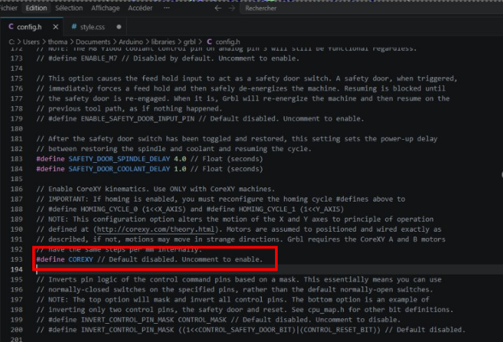
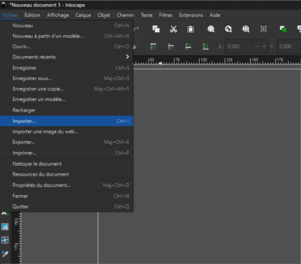
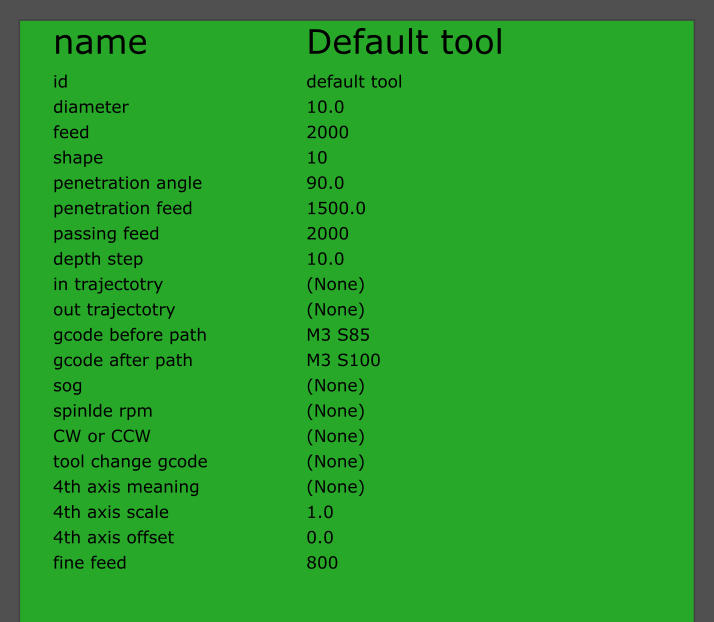
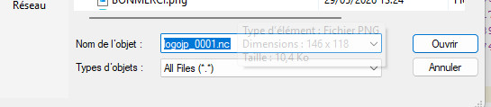
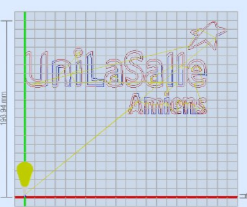
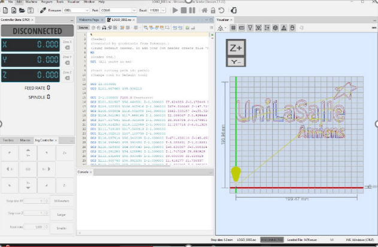
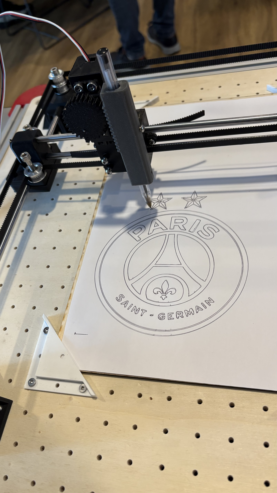

Logiciel

La première étape de notre travail a consisté à configurer le système de commande de la machine en téléversant le micrologiciel GRBL dans la mémoire de la carte Arduino. Ce logiciel open-source fait office de traducteur pour convertir les fichiers de dessin en signaux électriques pour les moteurs.
Afin que le programme s'adapte parfaitement à la cinématique spécifique de notre prototype, nous avons modifié le fichier de configuration source (config.h). Cette manipulation nous a permis d'activer manuellement la fonction CoreXY, une ligne de code indispensable pour que le logiciel comprenne et gère correctement les déplacements synchronisés de notre réseau de courroies croisées.

La seconde phase du projet repose sur l'utilisation du logiciel Inkscape. Cet outil de dessin vectoriel est indispensable pour convertir une image classique en un tracé numérique, appelé G-Code, qui sera ensuite interprété par la machine.
Pour commencer, nous avons configuré les propriétés du document en définissant une zone de travail carrée de 190 mm de côté. Ce dimensionnement strict a été choisi pour correspondre parfaitement à la zone utile de notre support en bois et garantir que le stylo ne dépasse jamais l'espace réel de la feuille A4.
Une fois cette zone délimitée, nous intégrons le dessin à réaliser en utilisant la fonction d'importation, accessible directement depuis le bouton bleu "Importer" de l'interface. Cet outil nous permet de charger l'image d'origine pour commencer son traitement de vectorisation.

Pour générer le tracé final, nous avons utilisé l'extension intégrée Gcodetools. Cette étape permet d'abord de créer les points d'orientation du dessin afin de définir précisément l'emplacement de l'origine (le point zéro) sur notre feuille.
C'est également à ce moment que nous configurons les commandes spécifiques à la gestion verticale du stylo via le servomoteur. Nous injectons ainsi la commande M3 S85 pour abaisser et plaquer le stylo sur la feuille lors des phases d'écriture, et la commande M3 S100 pour le lever lors des déplacements à vide.
Enfin, cette interface nous permet d'observer et d'ajuster finement la vitesse de déplacement du stylo, un paramètre crucial pour garantir la régularité et la netteté du tracé sur le papier.

Pour finaliser la création du fichier, nous retournons dans l'extension Gcodetools et sélectionnons l'option "Chemin vers G-code". Cette commande nous permet de nommer le fichier final selon nos besoins et d'exporter définitivement le script de tracé. Une fois ce fichier exporté, nous pouvons passer à l'étape suivante en ouvrant le logiciel Universal Gcode Sender (UGS), qui servira d'interface de pilotage pour envoyer le programme directement à la machine.

La dernière étape consiste à utiliser le logiciel Universal Gcode Sender (UGS) pour piloter notre machine XY. Pour établir la communication, nous cliquons d'abord sur le bouton "Connect", puis nous appuyons sur le bouton "Unlock" afin de déverrouiller la machine.
Une fois la connexion établie, nous déplaçons manuellement le chariot pour placer physiquement le stylo au point d'origine (0,0), c'est-à-dire tout en bas à gauche de la feuille de papier. Nous cliquons ensuite sur "Reset Zero" pour définir ce point comme l'origine de notre repère de travail.
Enfin, il ne reste plus qu'à charger notre dessin en cliquant sur "Open" pour sélectionner le fichier .nc généré précédemment sur Inkscape. Le logiciel affiche alors l'aperçu du tracé, confirmant que le programme est prêt à être envoyé à la machine.

Résultat final
Une fois le fichier chargé dans UGS, l'aperçu du dessin ici le logo d'UniLaSalle apparaît à l'écran, parfaitement positionné selon nos axes XY. Après une dernière vérification visuelle de la trajectoire, il suffit d'appuyer sur le bouton "Envoyer" (Send) pour lancer définitivement le tracé et voir les moteurs s'activer en parfaite synchronisation.
La machine exécute alors les mouvements de manière fluide, gérant automatiquement les levées et les poses de stylo pour reproduire fidèlement l'image vectorisée. Voici quelques exemples de nos créations qui viennent valider l'ensemble de notre travail de conception mécanique et électronique.
Exemples de tracés
